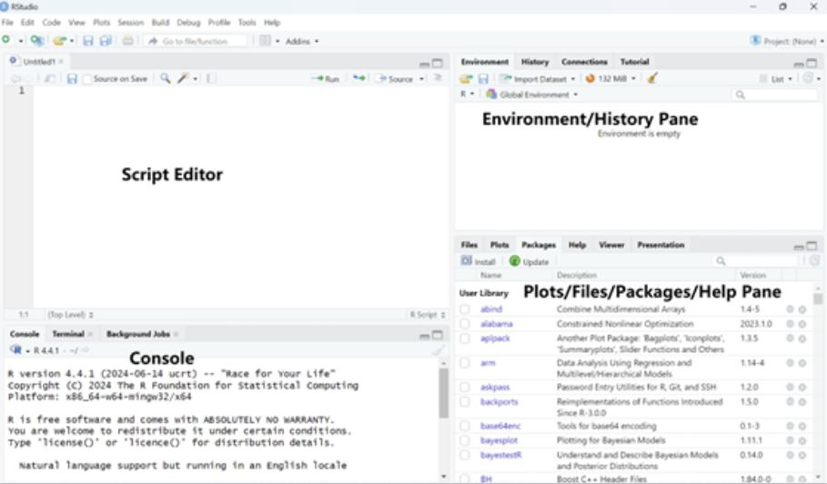

2 + 3 [1] 5By the end of this chapter, you will be able to:
Differentiate between the four scales of measurement—nominal, ordinal, interval, and ratio—and explain their impact on data analysis.
Identify different types of variables, including qualitative vs. quantitative, continuous vs. discrete, and independent vs. dependent variables, and understand their roles in research design.
Explain the importance of random sampling and random assignment, including how random sampling enhances external validity and how random assignment strengthens internal validity in research studies.
Research plays a fundamental role in expanding knowledge, solving problems, and making informed decisions across various fields. In education, research helps students, educators, administrators, and policymakers evaluate the effectiveness of instructional strategies, understand student learning processes, and improve educational outcomes. Whether investigating the impact of small class sizes on student achievement or assessing the effectiveness of technology-enhanced learning, research provides the foundation for evidence-based decision-making.
While this chapter does not cover all research methods used by educational researchers, it provides a solid foundation for understanding the quantitative methods introduced in this book. You will learn what research is, what data are, how to classify different types of data, and why quantitative methods matter in educational research. This foundational knowledge will support your understanding of the more advanced topics discussed in later chapters and equip you with the confidence to apply quantitative methods effectively in your own research.
Research methods refer to the systematic approaches used to collect, analyze, and interpret data to answer research questions. These methods help researchers understand patterns, test theories, and make informed decisions based on evidence.
Let’s consider a hypothetical scenario. A school principal wants to evaluate whether the instructional strategies used in teaching mathematics are effectively supporting student learning. In other words, “Are the current teaching methods in mathematics leading to improved student understanding and performance?”
To address this question, researchers collect data on student performance, analyze trends in how different teaching strategies impact learning process and outcomes, and interpret these findings to assess effectiveness. The goal of the research is to provide evidence-based insights into whether current instructional methods are achieving their intended outcomes or require modification. By addressing research questions with systematic inquiry, educators and policymakers can make informed, data-driven decisions about potential adjustments, ultimately aiming to enhance student learning outcomes.
Additional examples of education-related research questions include:
Does reducing class size in K-12 education produce significantly higher student achievement?
Is a technology-enhanced learning approach more effective than traditional classroom instruction in improving student engagement and comprehension?
How do different assessment methods impact students’ motivation and learning outcomes?
In educational research, methods are broadly classified into quantitative and qualitative approaches:
Quantitative research focuses on numerical data and statistical analysis (e.g., test scores, survey responses). It is useful for identifying patterns, testing hypotheses, and making predictions.
Qualitative research explores non-numerical data, such as interviews, observations, and open-ended responses, to understand deeper meanings and experiences. It is commonly used for exploring complex social or behavioral issues.
Mixed-methods research integrates both quantitative and qualitative approaches in a single study. Researchers may collect both numerical data (e.g., test scores) and non-numerical data (e.g. interviews or observations) to gain deeper insights. This approach offers a more comprehensive understanding by capturing both statistical trends and qualitative perspectives.
Regardless of the type of research, a standard part of the empirical research process is to collect data on the phenomenon of interest and then analyze the data to derive meaningful conclusions. As we walk through this book, you will learn how to analyze quantitative data, interpret the results of analyses, and draw conclusions for your scientific inquiries.
A key part of quantitative research is to apply statistical techniques to summarize and analyze data. A basic overview of the field of statistics is shown below. Statistics is broadly divided into:
Descriptive Statistics: Used to summarize and describe data (e.g., means, standard deviations, frequency distributions).
Inferential Statistics: Used to make predictions or draw conclusions about a population based on a sample (e.g., hypothesis testing, regression analysis). There are further subdivisions under inferential statistics.
As we progress through this book, you will learn how to apply these methods to analyze quantitative data, interpret research findings, and draw meaningful conclusions for educational research.
As an educator and researcher, you are constantly surrounded by information. To conduct quantitative research that supports evidence-based practices in education, you must transform that information into data that can be analyzed using quantitative methods. This involves two basic steps:
Operationalizing the concept by identifying and defining measurable variables that represent the idea you want to study.
Determining how to measure or collect data based on these variables (e.g., through survey responses, test scores, observational data).
These steps are closely connected and can easily be confused, as the way you define a variable often influences how it can be measured. However, keeping in mind that operationalization and measurement are related but distinct processes will help you approach research design more clearly and effectively.
When we measure, we attempt to identify the dimensions, quantity, capacity, or degree of something. Measurement is the act of measuring by assigning symbols or numbers to something according to a specific set of rules.
Measurement can be categorized by the type of information communicated by the symbols or numbers assigned to variables of interest. In particular, there are four levels, or types, of information that are discussed. They are called the four scales of measurement.
A nominal scale is the simplest form of measurement scale, used for categorizing or labeling data without any order or numeric value. It classifies data into distinct groups based on characteristics or attributes, but there’s no implied ranking or order between categories.
It is used to categorize, label, classify, name, or identify variables. It classifies groups or types.
Numbers can be used to label the categories of a nominal variable, but the numbers serve only as markers, not as indicators of amount or quantity. For example, if you were studying a variable like “mode of transportation,” you might assign numerical codes to each category: 1 = car, 2 = bicycle, 3 = bus.
Some examples of nominal-level variables include country of birth, college major, personality type, experimental group (e.g., treatment or control), ethnicity, and race.
An ordinal scale is a type of measurement scale that categorizes and orders data based on a hierarchy or ranking. It tells you the position of items relative to one another, but the intervals between the ranks are not necessarily equal or consistent. This level of measurement enables one to make judgments about rank order.
An ordinal variable is any variable whose categories can be ranked or ordered, but the intervals between the categories are not necessarily equal or known.
Examples of ordinal variables include the order in which someone finishes a marathon, class rank, rating scales (e.g., strongly agree to strongly disagree), and course grades (A, B, C, D, F).
An interval scale is a type of measurement scale that categorizes and orders data points, with equal distances between each value. Unlike a ratio scale, an interval scale does not have an absolute zero point, meaning zero doesn’t represent the total absence of what’s being measured.
Examples of interval-level variables include temperature measured in Celsius or Fahrenheit, IQ scores, and standardized test scores.
For instance, the absence of a true zero is evident in temperature scales: zero degrees Celsius does not mean there is no temperature, it simply represents a point on the scale.
A ratio scale is a type of measurement scale that has all the characteristics of an interval scale, with the additional feature of an absolute zero point.
A ratio scale has all characteristics of each lower-level scale: equal intervals (interval scale), rank order (ordinal scale), and the ability to mark a value with a name (nominal scale).
Examples of ratio-level variables include number of correct answers, weight, height, response time, temperature in Kelvin, and annual income.
For instance, the presence of a true zero is seen in income: if someone earns zero dollars in a year, it indicates a total absence of income. Zero truly means zero dollars.
The basic building blocks of quantitative data analysis are variables. Variables (something that takes on different values or categories) are the opposite of constants (something that cannot vary, such as a single value). As you recall, the first step in data analysis is deciding how to operationalize and define your variables. Once you have done that, the second step is determining how to measure them to collect data for analysis.
Quantitative vs. Qualitative. The first step in working with data is determining whether a variable is qualitative or quantitative. Ask yourself: Can this variable be easily represented by a number? If not, it is likely qualitative.
Variables measured on a nominal scale are qualitative, while the other three scales (ordinal, interval, and ratio) are quantitative. Qualitative variables, also called categorical variables, represent characteristics that describe categories or group membership rather than numerical quantities (e.g., eye color, type of school, or preferred learning method).
Quantitative variables, on the other hand, represent measurable numerical values that express an amount or quantity (e.g., height, test scores, or number of study hours).
It’s important to note that while qualitative (nominal) variables are not inherently numerical, they can still be incorporated into quantitative analyses by assigning numerical codes. This is often done using dichotomous variable. For example, coding group membership as 1 = treatment and 0 = control, which we will learn more about in later chapters.
Continuous vs. Discrete. Next, determine whether the variable is continuous or discrete. A helpful way to think about this distinction is to ask: Can you have “half” of something? For example, you can have half a pound or score half a point on a test - these are continuous variables. But you can’t have half a category, such as half of “blue” or half of “red” - these are discrete.
Qualitative (categorical) variables are always discrete because they represent distinct categories or groups. For quantitative variables, the distinction between continuous and discrete becomes a bit more nuanced.
Consider a Likert-type scale with responses like strongly agree, agree, disagree, and strongly disagree. This is an ordinal scale, and if each response is coded numerically (e.g., 1 = strongly agree, 2 = agree, etc.), it becomes a discrete quantitative variable. However, if multiple Likert items are averaged or summed—for example, combining responses from five related questions—you can generate a variable that behaves more like a continuous one. In such cases, values may range across a spectrum, such as from 1.0 to 5.0, including decimals like 3.7 or 4.2. These types of scores are typically treated as continuous in analysis because they provide more variability and can approximate interval-level measurement.
Why does this distinction matter? Because certain statistical techniques are only appropriate for continuous variables. For example, SAT scores are technically discrete, but because they have many possible values and tend to follow a normal distribution, they are often treated as continuous in educational research.
The main challenge arises with ordinal data that have only a few response categories (e.g., agree to disagree). Strictly speaking, such variables should not be treated as continuous. As you advance in your studies, you’ll learn about specialized statistical methods designed for analyzing ordinal data appropriately.
Dependent vs. Independent. Finally, it’s important to identify your independent and dependent variables. The independent variable (IV) is the variable you believe is the cause or influence in a relationship. The dependent variable (DV) is the outcome or effect—the variable that is influenced by the IV.
For example, consider the relationship between smoking and lung cancer. In this case, smoking is the independent variable because it is presumed to cause or influence lung cancer, which is the dependent variable.
Whenever you aim to make a claim about cause and effect—that is, that changes in one variable lead to changes in another—you must also be aware of extraneous or confounding variables. These are variables other than the independent variable that may influence the dependent variable. For instance, if lung cancer rates vary not because of smoking but due to exposure to air pollution, then air pollution would be a confounding variable.
You’ll learn more about how to control for these variables using statistical techniques such as multiple regression later in your studies. For now, it’s most important to understand the basic distinction between independent and dependent variables and to be aware that other variables may influence the outcome.
In research, it is often impractical or impossible to collect data from an entire population, so we rely on sampling to study a smaller, manageable subset. Sampling refers to drawing a sample (the subset) from a population (the full set). The usual goal of sampling is to produce a representative sample (i.e., a sample that is similar to the population on all characteristics, except that it includes fewer people rather than the complete population). A statistic is a numerical characteristic of a sample. A parameter is a numerical characteristic of a population. However, because a sample is only a subset, there will always be some sampling error - the difference between a sample statistic and the true population parameter.
To minimize bias and improve the accuracy of population estimates, researchers often use random sampling methods. Simple random sampling ensures that every individual in the population has an equal chance of being selected, making the error random rather than systematic. Unlike non-random sampling methods (e.g., convenience sampling), which may introduce bias when inferring population characteristics, random sampling enhances the representativeness of the sample, allowing the generalizability of findings to the broader population.
It is important to distinguish random sampling from random assignment, as they serve different purposes in research.
Random sampling refers to how participants are selected from the population to be included in a study. It is used to ensure a representative sample.
Random assignment, on the other hand, refers to how participants are assigned to different experimental conditions or groups (e.g., treatment vs. control group). It is a key feature of experimental research because it helps ensure differences between groups occur by chance, reducing potential confounding variables and allowing researchers to infer causality.
While random sampling improves external validity (the ability to generalize findings to a larger population), random assignment improves internal validity (helping to ensure differences between groups are due to the independent variable and not other factors).
Ideally, research results permit strong causal inferences such as “if intervention A is performed then outcome B will occur.” While such statements may be possible in some research domains, it is often difficult to establish them in social science fields such as education, psychology, and sociology. Let’s explore why this is the case. To establish causality, we first need to satisfy three key requirements: 1. temporal precedence, 2. covariation, and 3. elimination of alternative explanations.
Temporal precedence means that the cause (independent variable, intervention A) must occur before the effect (dependent variable, outcome B). This ensures that observed changes in the dependent variable result from the changes in dependent variable rather than the other way around.
Covariation means that there must be a relationship between the independent variable (intervention A) and the dependent variable (outcome B). If no correlation exists, we cannot infer causation.
Elimination of alternative explanations means that we should control for confounding variables that could influence the observed relationship between the independent and dependent variables. This is often done through random assignment in experiments.
In social science disciplines, causality is often hard to establish due to ethical and practical constraints. This is because we often cannot randomly assign participants to either experimental or treatment conditions to control for possible confounding variables because it is often impractical or unethical. For example, randomly assigning students to small or large class sizes could disrupt their education and raise fairness concerns. This limitation often leads educational researchers to use quasi-experimental designs or observational studies with statistical adjustments to approximate causal relationships.
To navigate these challenges, developing a strong foundation in quantitative research methods is essential. Learning basic techniques such as descriptive statistics, correlation analysis, and simple regression can help you analyze data, identify trends, and make informed conclusions. As you build your skills, you will gain confidence in interpreting research findings and applying quantitative methods to real-world educational questions. Whether you are designing a study, evaluating an intervention, or examining patterns in student learning, quantitative methods provide valuable tools for drawing meaningful insights from data.
To prepare for implementing the statistical analyses covered in this book, this section introduces the R programming language: a powerful, open-source environment widely used in educational, psychological, and social science research. Whether you have used SPSS, Excel, or another statistical tool before, this introduction will help you get comfortable with the basics of R so you can confidently follow the R demonstrations in later chapters.
R is a free, open-source programming language designed for data analysis, statistics, and visualization. It was created by statisticians and has grown into one of the most widely used tools in academic research, government agencies, and data-driven industries.
Open-source: entirely free to download, modify, and use;
Extensible: thousands of user-contributed packages for specialized methods;
Reproducible: analyses can be shared, re-run, and verified;
Powerful: capable of handling everything from simple summaries to advanced statistical modeling, machine learning, text mining, and survey analysis;
Widely adopted: used by educational researchers, psychometricians, data scientists, and analysts worldwide.
Most advanced or modern techniques introduced in later chapters (e.g., multilevel modeling, structural equation modeling, complex survey analysis, propensity models) are best implemented (or only available) in R. Using R empowers you to:
go beyond limited menu options;
automate repeated analyses;
produce publication-ready graphics;
work with large, complex datasets (e.g., PISA).
Even if R is new to you, the fundamentals are straightforward and will greatly expand your analytical toolkit.
R consists of the core language, while RStudio is a user-friendly interface that makes coding, visualizing, and managing files much easier.
RStudio organizes your workspace into four main panes:
Script Editor (top-left): Where you write and save your code, like a text editor where you write instructions for R to follow.
Console (bottom-left): Where you can type commands and see immediate results, like a calculator where you can input a calculation and see the answer right away.
Environment/History Pane (top-right): This section keeps track of everything you’ve created or used in your current R session, such as variables or datasets, like a workspace that shows you everything you have on your desk right now.
Plots/Files/Packages/Help Pane (bottom-right): This area has multiple tabs. You can see your graphs (plots), manage your files, install and view tools (packages) that help you with your analysis, and get help when you need it.

You can use R like a calculator to run simple calculations.
2 + 3 [1] 53 * 5 [1] 158 / 2 [1] 4Variables are like named storage boxes where you can keep data. You can assign a value to a variable using the assignment arrow (<-).
x <- 5 # Assigning the value 5 to the variable x, check environment pane
x [1] 5Once you have assigned a value, you can use the variable in other operations.
y <- x + 3
y [1] 8Vectors are like lists that can hold multiple values. You can create a vector to store several numbers at once with the c() function, which concatenates multiple values into a vector.
#creates a vector named numbers that contains the values 1, 2, 3, 4, and 5
numbers <- c(1, 3, 5, 7, 9)
sum(numbers) #total of all elements in the vector[1] 25mean(numbers) #average of all elements in the vector [1] 5new_nums <- numbers - mean(numbers) #what new_nums is? You can access specific elements in the vector using square brackets [].
numbers[2] #the 2nd element in the vector [1] 3numbers[1:3] #the first three elements in the vector [1] 1 3 5numbers[-4] #all elements except the 4th one [1] 1 3 5 9new_nums2 <- numbers[-c(3,5)] #what new_nums2 is? You can also use conditions to select only the elements that meet certain criteria. Suppose you want all the numbers in numbers that are greater than 5:
numbers > 5 # R checks each element, is it greater than 5? [1] FALSE FALSE FALSE TRUE TRUEnumbers[numbers > 5] # elements greater than 5 [1] 7 9Before loading any data file, it is important to tell R where your files are located. The simplest way is to set your working directory to the folder that contains your dataset.
You can set the working directory using Sessions > Set Working Directory > Choose Directory in RStudio.
shortcut: Ctrl + Shift + H
Or in code:
setwd("C:/Users/YourName/Documents/YourFolder") You can check your current working directory:
getwd() Once the working directory is correctly set and the data file is inside that folder, the following import commands will work without needing full file paths.
Educational researchers often work with data stored in Excel spreadsheets (.xlsx) or SPSS files (.sav). R can read these formats (and many others) easily, but only after we load the appropriate packages.
What are Packages?
Packages in R are like add-ons or extensions. They contain additional functions that make it easier to work with specific tasks, such as reading Excel or SPSS data files.
To use these packages, you need to install them (which downloads them onto your computer, and only needs to be done once) and then load them into your R session (each time you want to use the package).
How to Install and Load Packages?
To install a package, use the install.packages() function.
To load a package into your session, use the library() function.
For example:
To read Excel files → we use the readxl package
To read SPSS (.sav) files → we use the haven package
# Example 1: Import an Excel (.xlsx) File
# Install the package once
# install.packages("readxl")
# Load the package (must be done in every session)
library(readxl)
# Read Excel file into R
data_excel <- read_excel("chapter1/mydata.xlsx") # Example 2: Import an SPSS (.sav) File
# Install the package once
# install.packages("haven")
# Load the package
library(haven)
# Read SPSS (.sav) file
data_spss <- read_sav("chapter1/mydata.sav") Once imported, you can inspect your dataset:
head(data_spss) #view the first 6 rows of the data # A tibble: 6 × 20
CNTSTUID CNTSCHID ST004D01T ST250Q01JA MATHEASE MATHMOT MATHPERS PV1MATH
<dbl> <dbl> <dbl+lbl> <dbl+lbl> <dbl+lbl> <dbl+l> <dbl+lb> <dbl>
1 84000041 84000001 1 [Female] 2 [No] 0 [No percep… 1 [Mor… 0.192 573.
2 84000231 84000001 2 [Male] 1 [Yes] 0 [No percep… 0 [Not… 0.305 440.
3 84000240 84000001 2 [Male] 1 [Yes] 0 [No percep… 0 [Not… 0.304 642.
4 84000265 84000001 1 [Female] 1 [Yes] 0 [No percep… 0 [Not… 0.255 491.
5 84000682 84000001 1 [Female] 1 [Yes] 0 [No percep… 0 [Not… -0.0185 425.
6 84000936 84000001 1 [Female] 1 [Yes] 0 [No percep… 0 [Not… -1.09 454.
# ℹ 12 more variables: PV1MPRE <dbl>, PV1MCCR <dbl>, PV1MCQN <dbl>,
# PV1MCSS <dbl>, PV1MCUD <dbl>, PV1MPEM <dbl>, PV1MPFS <dbl>, PV1MPIN <dbl>,
# SC013Q01TA <dbl+lbl>, SC180Q01JA <dbl+lbl>, SCHLTYPE <dbl+lbl>,
# SC014Q01TA <dbl+lbl>dim(data_spss) #check how many rows and columns are in your dataset[1] 4552 20You should now feel comfortable navigating the RStudio environment, running basic commands, assigning variables, and using vectors. You also know how to set your working directory, install/load packages, and import data files into R. With these fundamentals in place, you are ready to explore statistical analysis using R in the following chapters!
Further Reading
Base R Cheatsheet: A handy reference guide for basic R commands and functions. IQSS Data Science Services. (n.d.). Base R cheat sheet. Harvard University. https://iqss.github.io/dss-workshops/R/Rintro/base-r-cheat-sheet.pdf
Learning R Textbook: A comprehensive textbook for learning R programming from scratch. Cotton, R. (2013). Learning R: A step-by-step guide to data analysis and visualization. https://duhi23.github.io/Analisis-de-datos/Cotton.pdf
Understanding the fundamental concepts of research methods, measurement scales, and variables is essential for effective data analysis and informed decision-making. By distinguishing between different scales of measurement, types of variables, and research approaches, researchers can ensure accurate data interpretation and robust conclusions. Mastering these foundational elements provides the tools necessary to navigate the complexities of quantitative and qualitative research, ultimately enabling evidence-based practices across various fields of study.
Understanding measurement and variables is essential for conducting quantitative research in education. Accurately defining and measuring key concepts—such as student achievement, engagement, or instructional effectiveness—requires distinguishing between different scales of measurement (nominal, ordinal, interval, ratio) and types of variables (qualitative vs. quantitative, continuous vs. discrete, independent vs. dependent). This ensures that data collected in educational studies are meaningful and can be analyzed appropriately.
Random sampling and random assignment serve different purposes. Random sampling improves external validity by ensuring a representative sample, while random assignment enhances internal validity by reducing confounding variables and strengthening causal claims in experimental research. For example, when studying broad educational trends, random sampling of students, teachers, or schools helps ensure that findings can be generalized to a larger population. In contrast, when evaluating the impact of a specific teaching strategy or intervention, random assignment to treatment and control conditions helps control for differences between students or classrooms, allowing researchers to draw stronger conclusions about cause and effect.
Establishing causality in educational research is challenging but important. Because ethical and practical constraints often prevent researchers from randomly assigning students to different learning conditions, educational research frequently relies on quasi-experimental designs or statistical methods to approximate causal relationships. Understanding these methods allows researchers to draw more accurate conclusions about the effectiveness of policies, instructional strategies, and other interventions in real-world educational settings.
Covariation means that there must be a relationship between the independent variable (intervention A) and the dependent variable (outcome B). If no correlation exists, we cannot infer the causation.
A dependent variable is the outcome or result that is measured or observed in an experiment to see how it is affected by changes in another variable (the independent variable). It’s often called the “effect” or outcome variable.
Elimination of alternative explanations means that we should control for confounding variables that could influence the observed relationship between the independent and dependent variables. This is often done through random assignment in experiments.
An independent variable is a factor or condition that is intentionally manipulated or changed by a researcher in an experiment to observe its effect on another variable. It’s often referred to as the “cause” or the predictor variable.
An interval scale is a type of measurement scale that categorizes and orders data points, with equal distances between each value. Unlike a ratio scale, an interval scale does not have an absolute zero point, meaning zero doesn’t represent the total absence of what’s being measured.
Measurement is formally defined as the act of measuring by assigning symbols or numbers to something according to a specific set of rules.
Mixed-methods research combines both quantitative and qualitative approaches in a single study. Researchers may collect numerical data (e.g., test scores) and also conduct interviews to gain deeper insights. This approach helps provide a more holistic understanding by capturing both statistical trends and personal experiences.
A nominal scale is the simplest form of measurement scale, used for categorizing or labeling data without any order or numeric value. It classifies data into distinct groups based on characteristics or attributes, but there’s no implied ranking or order between categories.
An ordinal scale is a type of measurement scale that categorizes and orders data based on a hierarchy or ranking. It tells you the position of items relative to one another, but the intervals between the ranks are not necessarily equal or consistent. This level of measurement enables one to make judgments about rank order.
A parameter is a numerical characteristic of a population.
A ratio scale is a type of measurement scale that has all the characteristics of an interval scale, with the additional feature of an absolute zero point.
A statistic is a numerical characteristic of a sample.
Temporal precedence means that the cause (independent variable, e.g., intervention A) must occur before the effect (dependent variable, outcome B). This ensures that observed changes in the dependent variable result from the changes in dependent variable rather than the other way around.
Qualitative research explores non-numerical data, such as interviews, observations, and open-ended responses, to understand deeper meanings and experiences. It is commonly used for exploring complex social or behavioral issues.
Quantitative research focuses on numerical data and statistical analysis (e.g., test scores, survey responses). It is useful for identifying patterns, testing hypotheses, and making predictions.
1. Which scale of measurement has an absolute zero point?
2. What type of variable can take on an infinite number of possible values within a given range?
3. Which of the following research approaches combines both quantitative and qualitative methods?
4. In research, random assignment primarily enhances which type of validity?
5. Which of the following is an example of a nominal scale?